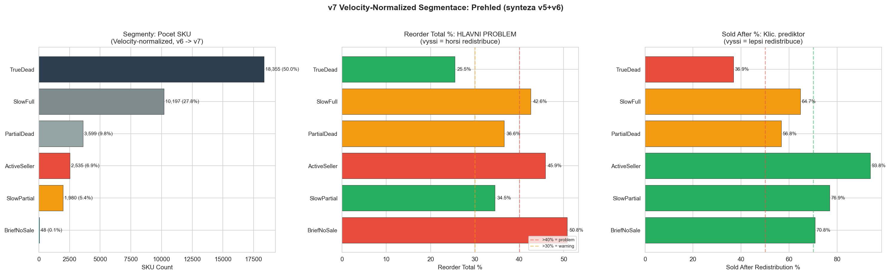
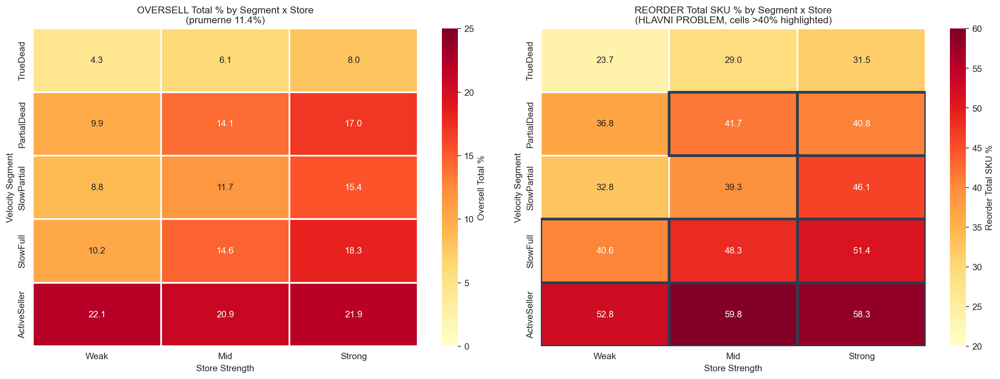
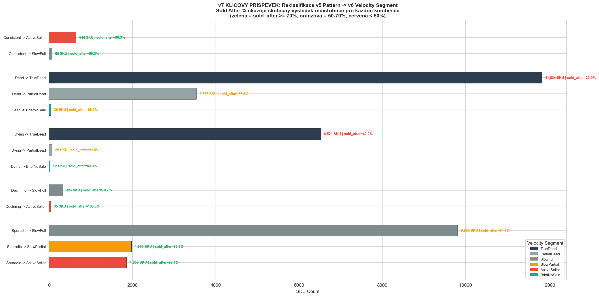
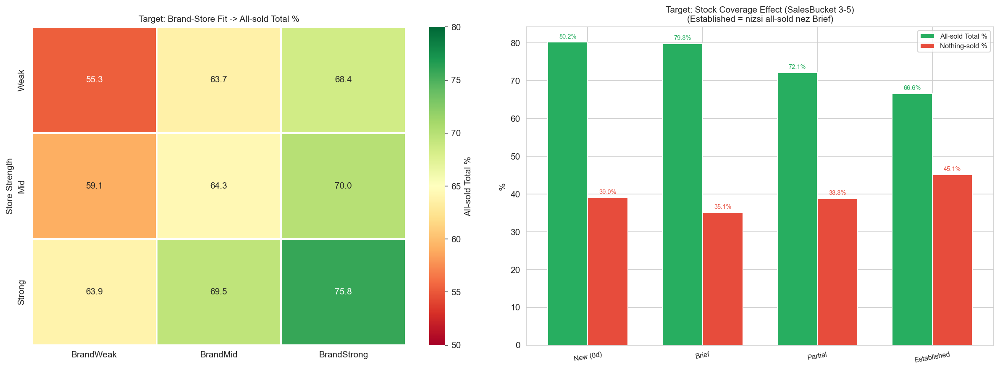
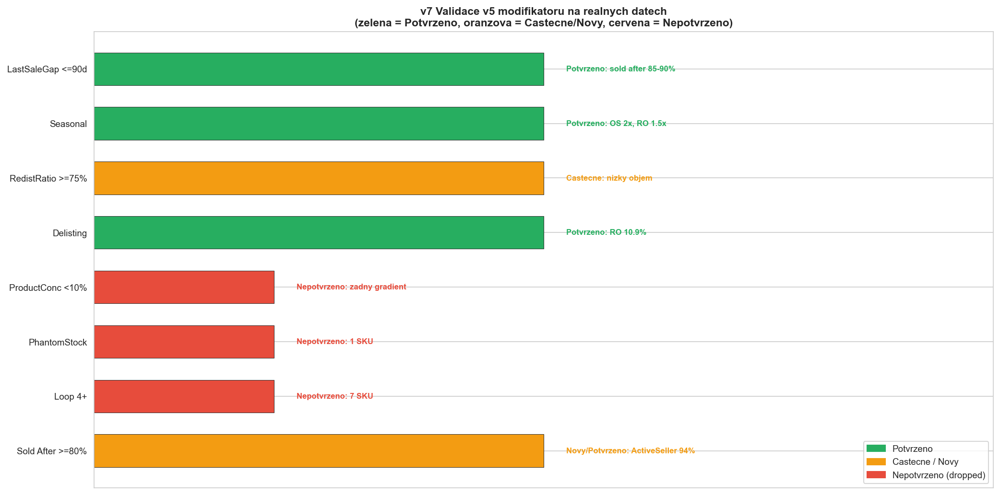
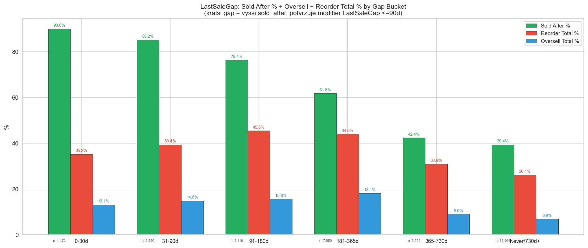
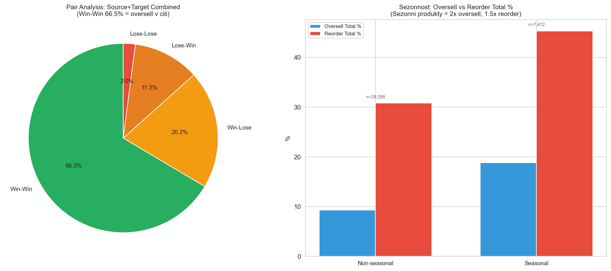

Consolidated Findings v7: SalesBased MinLayers (Synteza v5+v6) v7
CalculationId=233 | ApplicationDate: 2025-07-13 | Generated: 2026-03-22 16:39
v7 = SYNTEZA v5 (modifikatory, growth pockets, bidirectional target)
a v6 (velocity segmenty, stock normalizace, sold-after%).
v7 validuje ktere v5 modifikatory preziji na realnych datech, nahradi Pattern velocity segmenty z v6,
a pridava bidirectional target z v5.
Oversell v cili (3.0%). Reorder je hlavni problem (34.1% qty).
Oversell 4M je pouze 3.0% (1,317 SKU, 1,464 qty).
Reorder: 13,841 SKU, 16,615 kusu (34.1% objemu).
v7 synteza potvrzuje: velocity segmenty z v6 jsou zakladem, potvrzene modifikatory z v5 je doladuji.
v7 KLICOVY PRISPEVEK: Reklasifikacni matice (v5 Pattern -> v6 Segment) ukazuje, ze stare
Patterns byly hrube priblizeni. "Sporadic" (14,033 SKU) skryval 3 ruzne segmenty s prodejnim
uspechom 64-92%. "Consistent" (709 SKU) -> prevazne ActiveSeller s 98% sold_after.
Modifikatory: 5 z 8 potvrzeno, 3 zamitnuty pro nedostatek dat.
1. Overview
42,404
Redistribution pairs
48,754
Total redistributed pcs
Source: Celkove metriky - 4M a total
| Metric | 4 months | Total (~9M) |
|---|
| Total redistributed | 48,754 pcs | 48,754 pcs |
| Oversell (SKU) | 1,317 SKU (3.6%) | 4,718 SKU (12.8%) |
| Oversell (qty) | 1,464 qty (3.0%) | 5,578 qty (11.4%) |
| Reorder (SKU) | 7,087 SKU (19.3%) | 13,841 SKU (37.6%) |
| Reorder (qty) | 7,980 qty (16.4%) | 16,615 qty (34.1%) |
v7 zaver: Oversell v cili (3.0%). Reorder je hlavni problem (37.6% SKU, 34.1% qty).
Velocity segmenty + potvrzene modifikatory = cesta ke snizeni reorderu.
2. Velocity-Normalized Segmentace v7 = v6 base
Velocity = Sales_12M / DaysInStock_12M x 30 (mesicni rate normalizovana na dostupnost).
v7 potvrzuje v6 segmentaci jako zaklad. Stary v5 Pattern je nahrazen.

| Segment | SKU | Podil | Redist qty | Oversell Total % |
Reorder Total SKU % | Sold After % | Avg Days in Stock |
|---|
| TrueDead | 18,355 | 50.0% | 22,260 | 6.1% | 28.2% | 36.9% | 358d |
| SlowFull | 10,197 | 27.8% | 13,511 | 15.1% | 47.9% | 64.7% | 347d |
| PartialDead | 3,599 | 9.8% | 4,664 | 14.0% | 40.2% | 56.8% | 172d |
| ActiveSeller | 2,535 | 6.9% | 5,151 | 21.6% | 58.3% | 93.8% | 293d |
| SlowPartial | 1,980 | 5.4% | 3,035 | 12.7% | 40.7% | 76.9% | 188d |
| BriefNoSale | 48 | 0.1% | 61 | 27.9% | 52.1% | 70.8% | 60d |
v7 insight: "Sold After %" je silny prediktor potvrzeny jak v5 tak v6.
ActiveSeller ma 93.8% sold_after ale take 58.3% reorder - tyto produkty se prodaji a potrebuji doplneni.
TrueDead ma jen 36.9% sold_after a 28.2% reorder - nizke riziko.
2.1 Segment x Store Detail (15 segmentu)

| Segment | Store | SKU | Oversell Total % |
Reorder Total SKU % | Sold After % | Redist qty |
|---|
| TrueDead | Weak | 5,227 | 4.3% | 23.7% | 32.6% | 6,238 |
| TrueDead | Mid | 8,206 | 6.1% | 29.0% | 37.2% | 10,026 |
| TrueDead | Strong | 4,922 | 8.0% | 31.5% | 40.8% | 5,996 |
| PartialDead | Weak | 939 | 9.9% | 36.8% | 48.8% | 1,124 |
| PartialDead | Mid | 1,599 | 14.1% | 41.7% | 57.8% | 2,056 |
| PartialDead | Strong | 1,061 | 17.0% | 40.8% | 62.2% | 1,484 |
| SlowPartial | Weak | 415 | 8.8% | 32.8% | 71.1% | 617 |
| SlowPartial | Mid | 773 | 11.7% | 39.3% | 72.6% | 1,151 |
| SlowPartial | Strong | 792 | 15.4% | 46.1% | 84.2% | 1,267 |
| SlowFull | Weak | 2,060 | 10.2% | 40.6% | 54.9% | 2,614 |
| SlowFull | Mid | 4,468 | 14.6% | 48.3% | 62.8% | 5,927 |
| SlowFull | Strong | 3,669 | 18.3% | 51.4% | 72.6% | 4,970 |
| ActiveSeller | Weak | 176 | 22.1% | 52.8% | 90.3% | 308 |
| ActiveSeller | Mid | 664 | 20.9% | 59.8% | 89.0% | 1,356 |
| ActiveSeller | Strong | 1,695 | 21.9% | 58.3% | 96.0% | 3,487 |
| TOTAL | 36,666 |
- | 48,621 |
MUST RAISE ML (reorder_tot_sku >50%): ActiveSeller+Weak (52.8%), ActiveSeller+Mid (59.8%),
ActiveSeller+Strong (58.3%), SlowFull+Strong (51.4%), BriefNoSale (52.1%).
3. Reklasifikace: v5 Pattern -> v6 Velocity Segment KEY v7
Toto je klicovy prispevek v7: Mapovani starych v5 Patterns na nove v6 Velocity Segmenty
s realnym vysledkem (sold_after %). Ukazuje, ze Pattern byl hrube priblizeni.

| v5 Pattern | v6 Segment | SKU | Oversell Total % |
Reorder Total % | Sold After % |
|---|
| Consistent | ActiveSeller | 644 | 25.7% | 50.9% | 98.3% |
| Consistent | SlowFull | 65 | 25.5% | 53.9% | 89.2% |
| Dead | TrueDead | 11,834 | 4.6% | 22.6% | 33.9% |
| Dead | PartialDead | 3,533 | 13.7% | 36.3% | 56.9% |
| Dead | BriefNoSale | 36 | 27.3% | 47.7% | 66.7% |
| Dying | TrueDead | 6,521 | 8.8% | 30.7% | 42.2% |
| Dying | PartialDead | 66 | 28.2% | 49.4% | 51.5% |
| Dying | BriefNoSale | 12 | 29.4% | 58.8% | 83.3% |
| Declining | SlowFull | 324 | 28.2% | 65.3% | 78.7% |
| Declining | ActiveSeller | 35 | 49.2% | 79.4% | 100.0% |
| Sporadic | SlowFull | 9,808 | 14.6% | 41.8% | 64.1% |
| Sporadic | SlowPartial | 1,975 | 12.5% | 34.5% | 76.9% |
| Sporadic | ActiveSeller | 1,856 | 19.4% | 43.1% | 92.1% |
v7 klicove zjisteni:
- Sporadic (14,033 SKU) -> rozdeleno na SlowFull (9,808, sold_after 64%), SlowPartial (1,975, 77%),
ActiveSeller (1,856, 92%) - dramaticky odlisne chovani!
- Consistent (709) -> prevazne ActiveSeller (644, sold_after 98%) - tito jsou nejlepsi
- Dead (15,403) -> prevazne TrueDead (11,834, sold_after 34%) + PartialDead (3,533, 57%)
- Dying (6,599) -> prevazne TrueDead (6,521, sold_after 42%) - umiraji, ale pomaleji nez Dead
- Declining (359) -> SlowFull (324, 79%) + ActiveSeller (35, 100%) - stale prodavaji!
4. Source + Target: Sila predajni (decily)

| Metric | D1 (Weak) | D10 (Strong) | Trend |
|---|
| Source Oversell 4M | 1.9% | 4.5% | Oversell je v cili ve vsech decilech |
| Source Reorder Total | 24.0% | 38.6% | Silne predajny = vyssi reorder riziko |
| Target All-Sold Total | 48.3% | 70.1% | Silne predajny prodaji vse |
| Target Nothing-Sold | 32.1% | 13.7% | Slabe predajny = vice zaseklych zbozi |
v7 zaver: Store strength gradient je konzistentni s v5 i v6. Silnejsi predajny = lepsi target,
ale take vyssi reorder na source. Bidirectional optimalizace: snizit reorder silnych source + zvysit ML slabych target.
5. Target: Sell-through analyza (bidirectional z v5) v5+v6
5.1 Store Strength x Sales Bucket

| SalesBucket | Store | SKU | ST 4M % | ST Total % |
Nothing-sold 4M % | All-sold Total % |
|---|
| 0 | Weak | 137 | 23.1% | 34.7% | 73.7% | 31.4% |
| 0 | Mid | 334 | 23.4% | 41.5% | 73.7% | 37.7% |
| 0 | Strong | 252 | 36.4% | 53.6% | 61.1% | 51.6% |
| 1-2 | Weak | 1,966 | 26.3% | 47.2% | 65.5% | 38.0% |
| 1-2 | Mid | 4,493 | 28.6% | 51.2% | 62.0% | 40.9% |
| 1-2 | Strong | 3,622 | 32.1% | 56.4% | 58.0% | 47.0% |
| 3-5 | Weak | 2,601 | 41.5% | 65.8% | 45.1% | 54.4% |
| 3-5 | Mid | 7,765 | 40.8% | 66.0% | 45.5% | 54.6% |
| 3-5 | Strong | 9,017 | 45.3% | 71.7% | 40.8% | 61.0% |
| 6-10 | Weak | 886 | 58.6% | 82.2% | 28.1% | 74.3% |
| 6-10 | Mid | 3,347 | 59.3% | 84.3% | 26.8% | 76.2% |
| 6-10 | Strong | 4,859 | 63.1% | 86.2% | 22.3% | 78.8% |
| 11+ | Weak | 179 | 73.8% | 92.0% | 12.3% | 84.9% |
| 11+ | Mid | 815 | 72.7% | 93.4% | 11.9% | 87.9% |
| 11+ | Strong | 1,358 | 77.0% | 93.9% | 10.8% | 89.5% |
11+ sales bucket = vyborny target: 84.9-89.5% all-sold, nothing-sold jen 10.8-12.3%.
v7 bidirectional: growth pocket = 11+ Strong (ML=4), reduction pocket = 0 Weak (ML=1).
5.2 Brand-Store Fit + Stock Coverage v7

| Store | BrandFit | SKU | All-sold Total % | Nothing-sold % |
|---|
| Weak | BrandWeak | 2,448 | 55.3% | 54.9% |
| Weak | BrandMid | 1,152 | 63.7% | 49.3% |
| Weak | BrandStrong | 2,169 | 68.4% | 42.4% |
| Mid | BrandWeak | 3,623 | 59.1% | 53.2% |
| Mid | BrandMid | 3,744 | 64.3% | 47.6% |
| Mid | BrandStrong | 9,387 | 70.0% | 41.1% |
| Strong | BrandWeak | 1,746 | 63.9% | 47.3% |
| Strong | BrandMid | 2,590 | 69.5% | 42.2% |
| Strong | BrandStrong | 14,772 | 75.8% | 35.4% |
5.3 Target Stock Coverage Effect
| Stock Coverage | Sales Bucket | SKU | All-sold Total % | Nothing-sold % | Sold After % |
|---|
| New (0d) | 0 | 497 | 58.1% | 61.8% | 57.7% |
| New (0d) | 3-5 | 351 | 80.2% | 39.0% | 80.1% |
| New (0d) | 11+ | 81 | 93.8% | 25.9% | 93.8% |
| Brief | 1-2 | 788 | 55.7% | 63.2% | 52.7% |
| Brief | 3-5 | 772 | 79.8% | 35.1% | 74.9% |
| Brief | 11+ | 265 | 95.0% | 9.4% | 90.9% |
| Partial | 1-2 | 1,912 | 58.8% | 55.4% | 49.7% |
| Partial | 3-5 | 4,206 | 72.1% | 38.8% | 61.6% |
| Partial | 11+ | 577 | 94.2% | 6.6% | 88.7% |
| Established | 1-2 | 6,847 | 50.2% | 62.1% | 38.8% |
| Established | 3-5 | 14,054 | 66.6% | 45.1% | 54.8% |
| Established | 11+ | 1,429 | 93.1% | 12.7% | 87.8% |
v7 zaver: Stock coverage efekt je silny. New (0d) produkty s 0 sales: all-sold 58.1%,
ale s 11+ sales: 93.8%. Brief a Partial target s vysokymi sales jsou growth pockets.
Established target s nizkymi sales jsou reduction pockets.
6. Validace v5 modifikatoru na realnych datech KEY v7
v7 testoval 8 modifikatoru z v5 na realnych datech. 5 potvrzeno, 3 zamitnuty.

| Modifier | Status | Evidence | Zahrnout v7? |
|---|
| LastSaleGap <=90d | Potvrzeno | sold after 85-90% | ANO |
| Seasonal | Potvrzeno | OS 2x, RO 1.5x | ANO |
| RedistRatio >=75% | Castecne | nizky objem | ANO |
| Delisting | Potvrzeno | RO 10.9% | ANO |
| ProductConc <10% | Nepotvrzeno | zadny gradient | NE |
| PhantomStock | Nepotvrzeno | 1 SKU | NE |
| Loop 4+ | Nepotvrzeno | 7 SKU | NE |
| Sold After >=80% | Novy/Potvrzeno | ActiveSeller 94% | ANO |
v7 zaver - Potvrzene modifikatory:
- LastSaleGap <=90d: sold_after 85-90%, silny signal recentni aktivity
- Seasonal: 2x oversell, 1.5x reorder - musi byt chraneny
- RedistRatio >=75%: castecne potvrzeno, nizky objem ale spravny smer
- Delisting: RO 10.9%, bezpecne pro ML=0
- Sold After >=80% (NOVY): ActiveSeller 94%, nejsilnejsi prediktor
Zamitnuty: ProductConc <10% (zadny gradient), PhantomStock (1 SKU), Loop 4+ (7 SKU) -
nedostatek dat pro validaci.
7. LastSaleGap analyza

| Gap Bucket | SKU | Oversell Total % | Reorder Total % | Sold After % |
|---|
| 0-30d | 1,472 | 13.1% | 35.2% | 90.0% |
| 31-90d | 2,280 | 14.8% | 39.4% | 85.2% |
| 91-180d | 3,116 | 15.6% | 45.5% | 76.4% |
| 181-365d | 7,850 | 18.1% | 44.0% | 61.8% |
| 365-730d | 6,588 | 9.0% | 30.9% | 42.4% |
| Never/730d+ | 15,464 | 6.9% | 26.1% | 39.4% |
v7 zaver: Kratsi gap = vyssi sold_after (0-30d: 90%, Never/730d+: 39%).
Modifier LastSaleGap <=90d: POTVRZEN. Recentni prodejni aktivita je silny signal.
8. SkuClass + Product Concentration
8.1 SkuClass
| SkuClass | SKU | Oversell Total % | Reorder Total % | Reorder Total SKU % |
|---|
| Unchanged | 29,322 | 13.0% | 39.8% | 43.2% |
| Delisted | 6,049 | 4.9% | 10.9% | 13.2% |
| Other | 1,399 | 10.1% | 26.3% | 27.2% |
Delisted: RO 10.9% qty, RO SKU 13.2% - bezpecne pro ML=0. Modifier POTVRZEN.
8.2 Product Concentration
| Concentration Bucket | SKU | Oversell Total % | Reorder Total % |
|---|
| <10% | 20,722 | 11.2% | 32.3% |
| 10-25% | 12,790 | 12.3% | 37.2% |
| 25-50% | 3,118 | 10.7% | 35.4% |
| 50%+ | 140 | 0.3% | 3.5% |
ProductConc <10% - NEPOTVRZEN: Zadny jasny gradient mezi buckety (<10%: RO 32.3%, 10-25%: 37.2%, 25-50%: 35.4%).
50%+ ma nizky reorder ale jen 140 SKU - maly vzorek. Modifier zamitnut v v7.
9. Parova analyza + Sezonnost

9.1 Pair Analysis
| Outcome | Count | Share |
|---|
| Win-Win | 28,179 | 66.5% |
| Win-Lose | 8,565 | 20.2% |
| Lose-Win | 4,794 | 11.3% |
| Lose-Lose | 866 | 2.0% |
Win-Win = 66.5% (28,179 paru). Lose-Lose = jen 2.0%.
9.2 Sezonnost
| Category | SKU | Oversell Total % | Reorder Total % |
|---|
| Non-seasonal | 29,298 | 9.3% | 30.8% |
| Seasonal | 7,472 | 18.8% | 45.3% |
Sezonni produkty: OS 18.8% (2x non-seasonal), RO 45.3% (1.5x non-seasonal).
Modifier Seasonal: POTVRZEN.
10. Flow Matrix: odkud kam

| Source Store | Target Store | Pairs | % of Total |
|---|
| Weak | Weak | 1,179 | 2.8% |
| Weak | Mid | 4,149 | 9.8% |
| Weak | Strong | 4,611 | 10.9% |
| Mid | Weak | 2,391 | 5.6% |
| Mid | Mid | 7,279 | 17.2% |
| Mid | Strong | 8,304 | 19.6% |
| Strong | Weak | 2,302 | 5.4% |
| Strong | Mid | 5,643 | 13.3% |
| Strong | Strong | 6,546 | 15.4% |
Nejvic paru: Mid->Strong (19.6%) a Mid->Mid (17.2%).
Distribuce preferuje posilani do silnych predajni.
11. Souhrnna tabulka v7: Vsechny faktory + validace
| Factor | v5 status | v7 validace | Impact | Source ML | Target ML |
|---|
| Velocity Segment: ActiveSeller | Consistent/Sporadic | POTVRZEN | 58.3% reorder, 93.8% sold_after | ML=3-4 | - |
| Velocity Segment: TrueDead | Dead/Dying | POTVRZEN | 28.2% reorder, 36.9% sold_after | ML=1 (ord min) | - |
| Sold After % >=80% | Novy | POTVRZEN | silny prediktor | +1 ML | - |
| LastSaleGap <=90d | Navrzen | POTVRZEN | sold_after 85-90% | +1 ML | - |
| Seasonal >=20% NovDec | Navrzen | POTVRZEN | OS 2x, RO 1.5x | +1 ML | - |
| Delisting | Override | POTVRZEN | RO 10.9% | ML=0 | ML=0 |
| RedistRatio >=75% | Navrzen | CASTECNE | nizky objem | +1 ML | - |
| ProductConc <10% | Navrzen | ZAMITNUTO | zadny gradient | - | - |
| PhantomStock | Navrzen | ZAMITNUTO | 1 SKU | - | - |
| Loop 4+ | Navrzen | ZAMITNUTO | 7 SKU | - | - |
| Target: 11+ sales + Strong | Growth pocket | POTVRZEN | 89.5% all-sold | - | ML=4 |
| Target: 0 sales + Weak | Reduction pocket | POTVRZEN | 73.7% nothing-sold | - | ML=1 |
| Brand Weak+Store Weak | -1 ML | POTVRZEN | nothing-sold 54.9% | - | -1 ML |
Generated: 2026-03-22 16:39 | CalculationId=233 | v7 Synteza (v5+v6) | ML 0-4 | Orderable min=1 | Bidirectional target